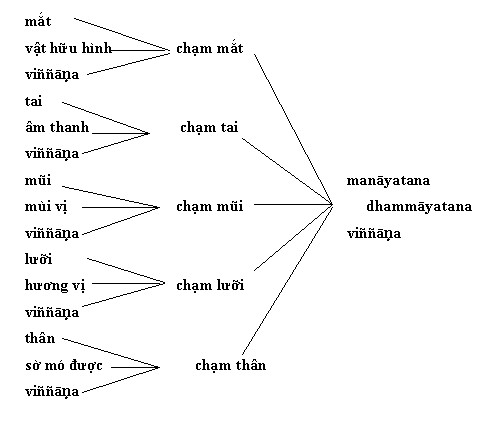

Chương 6 Viññāṇakkhandha Theo cách liệt kê thứ tự năm tập hợp, viññāṇa đứng hàng thứ năm và thường được dịch là ‘thức’. Giống như bốn tập hợp trước, có sáu loại viññāṇa được đặt tên theo giác quan thi hành nhiệm vụ của nó.[1] Vì thế, ta thấy viññāṇa liên kết với từng cửa giác quan. Định nghĩa trong kinh tạng về tập hợp này mơ hồ như các định nghĩa về các khandha trước. Tạng Pāli nói là sở dĩ viññāṇa được gọi như thế vì nó biết.[2] Định nghĩa này chỉ có ý nghĩa với người tiếng Pāli là tiếng mẹ đẻ, những người hình dung trong tâm tưởng ý nghĩa của chữ ‘biết’ bằng ngôn ngữ và văn hóa của họ. Bãt hạnh thay, hầu hết chúng ta bị đặt trong tình trạng không có manh mối nào đến ý nghĩa của chữ này. Trong việc truy tìm manh mối giúp cho việc định nghĩa tập hợp này, chúng tôi thấy rằng viññāṇa phơi bầy ra đặc tính của tất cả hiện tượng chịu điều kiện: đó là sự thật về vô thường và vô ngã. Ví dụ, phẩm Cullavedalla chỉ trích chủ trương cho rằng không những viññāṇa mà còn tất cả các tập hợp khác là trú xứ của bản ngã (atta),[3] trong khi phẩm Alagaddūpama nhấn mạnh rằng viññāṇa tự nó cũng vô thường.[4] Và ở kinh khác có đề cập là những ai tin rằng viññāṇa tự nó có số mạng riêng, khác hẳn với các tập hợp khác, người ấy đã lầm về thực tánh của nó.[5] Vì thế trong Phật học Pāli, rõ ràng là cả viññāṇa lẫn bất cứ tập hợp nào khác đều không thể được coi là thường tồn hay chiếm ngụ nơi ngã trường cửu. Có những học giả như bà Rhys Davids[6] tranh luận rằng chứng cớ trong kinh không phải lúc nào cũng chưng viññāṇa ra làm yếu tố vô thường. Lý lẽ chính của họ là viññāṇa thường được bắt đầu nghĩ tới là nơi trú ngụ của cá thể, trú xứ của bản ngã, hay của một thực thể trường tồn bằng cách dẫn chứng kinh điển đề cập đến viññāṇa theo nghĩa ‘ngã’. Có ít nhất hai trường hợp ấy.[7] Sau cái chết của một số tỳ kheo đã chứng quả Arahant (tỳ kheo Godhika và Vakkhali), Māra hoài công tìm kiếm viññāṇa của hai vị này vì thức đã hoàn toàn không còn sanh khởi nữa. Theo bà Rhys Davids, điều này chắc hẳn là viññāṇa của người chưa được giải thoát sẽ đi đến chỗ nào đó trước khi tái sanh - vì thế ám chỉ đến sự hiện hữu của một loại thực thể trường tồn nào đó đi từ thân này sang thân khác. Bà Rhys Davids còn ghi chú là động từ ‘khởi lên’ (uppajjati hay uppatti) thường được dùng với viññāṇa, đôi khi được thay bằng ‘nhập vào bụng mẹ’ (avakkhanti)[8]. Một lần khác, khi đề cập tới thực thể trường tồn, bà Rhys Davids giải thích điều này là một loại ‘linh hồn’ nhập vào ‘thân xác’. Được nhận định như thế, những ví dụ này mâu thuẫn với thuyết cốt lõi về vô thường nói chung, với tự tánh thay đổi của viññāṇa,[9] và quan điểm cho thân thể hiện hữu trường tồn (sakkāyadiṭṭhi).[10] Vì thế, bà Rhys Davids đề nghị rằng ý niệm về một thực thể luân chuyển từ kiếp này sang kiếp khác ắt phải là một ‘ảnh hưởng’[11] của lòng tin dân gian vào Phật Giáo - đãy chỉ là một thứ ‘truyền tụng trong dân gian’ - vì vài đoạn văn dẫn chứng quá ít ỏi này quả không đáng quan tâm khi tương phản với sự nhấn mạnh vào ý niệm về anicca và sakkāyadiṭṭhi trong toàn văn học Phật Giáo. Tuy nhiên tôi tin rằng lời giải thích của bà ta về những đoạn này là kết quả do hiểu lầm về ý niệm vô thường và về thuyết cốt tủy sanh khởi do tùy thuộc. Viññāṇa mang đặc tính vô thường theo nghĩa nó sanh lên và diệt đi trong từng khoảnh khắc. Nhưng đạo Phật nhấn mạnh rằng những đợt viññāṇa mới liên tiếp khởi lên theo trình tự nhân quả không gián đoạn. Như Richard Hayes nhận xét: ‘Dù có chấp nhận giòng liên tục của khoảnh khắc các biến cố tâm thức di chuyển từ thân này sang thân khác, hay sống ngoài thân thể trong một khoảng thời gian, sự chấp nhận này không có nghĩa liệt người ta vào phái trường kiến hay phái coi sự liên tục miên viễn ấy là ngã.[12] Bà Rhys Davids cho rằng khi nói chuỗi trình tự các viññāṇa có liên hệ nhân quả không cứ là ám chỉ đến bất kỳ một quan niệm trường tồn nào. Điều này không cho ta một nền tảng đáng kể nào để xác định rằng những đoạn đề cập ở trên đại diện cho ‘ảnh hưởng’ của ‘truyền tụng dân gian’. Hơn nữa, những đoạn kinh khác thống nhất hợp với sự giải thích về viññāṇa trong kinh tạng. Như Lilian Silburn đã giải thích: Chung quanh về vijñāna [viññāṇa] ảo tưởng mê lầm về sự trường cửu của bản ngã con người, theo nhận định của Sāti, một trong những đệ tử của Phật, cho đến các đệ tử người phương tây của Phật, đã hoài công tìm kiếm bản ngã tồn tại và lưu chuyển luân hồi bằng vijñāna... mà kinh điển nói ngược lại rằng thức chịu điều kiện và diệt đi... trong mỗi khoảnh khắc mỗi vijñāna xuất hiện do vijñāna trước đó qui định; chắc chắn có sự liên tục bởi vì các khoảnh khắc tâm phụ thuộc vào điều kiện và kế tiếp nhau không gián đoạn; nhưng không có sự tiếp nối theo nguyên tắc cho dù có thay đổi, nó cốt yếu vẫn như nguyên.[13] Ý niệm về viññāṇa thay đổi mãi, về ‘không thực thể’ hình như hoàn toàn phù hợp với sự hiểu biết của William James về thức: Thẳng thừng từ khước sự hiện hữu của ‘thức’ thoạt trông có vẻ phi lý - vì ‘ý tưởng’ hiện hữu là điều không thể chối cãi được - e rằng vài độc giả sẽ bỏ tôi không đọc tiếp. Hãy để tôi giải thích ngay rằng tôi chỉ bác bỏ từ ngữ đại diện cho một thực thể, nhưng cả quyết rằng chính thức này đại diện cho một chức năng.[14] Vì thế, để tỏ rõ ý nghĩa của viññāṇa, như William James đề nghị, ta nên xem nó như là một chức năng trừu tượng, một nghiệp vụ tâm thức không thể sờ mó được, như đã xem tất cả các tập hợp kia. Nhiệm vụ của Viññāṇa Nhiều học giả chủ trương rằng nhiệm vụ của viññāṇa chỉ là hiểu thế giới hiện tượng đơn thuần, ‘hiện tượng, sự vật được trực tiếp nhận biết ngay lập tức trên bình diện tâm thức, đối nghịch hẳn với toàn thể tiến trình của ý.’[15] Điển hình là lời giải thích của Stcherbatsky: ‘Nó [viññāṇa] biểu tượng cho nhận thức thuần túy, hay sự nhận biết thuần túy, mà không hàm chứa nội dung nào. Nội dung của nó được đặt trong phần đối tượng chứa đựng hẳn nhiên là nhận thức (sparśa), cảm giác (vedanā), tâm ý (saṁjña), chủ ý (cetanā) rõ ràng...[16] Ông viết tiếp: ... vijñāna và các chữ đồng nghĩa của nó như cittā, manaḥ, đại diện cho nhận thức thuần túy, giống như kalpanāpoḍha của Diṅnāga, và saṁjña đáp ứng với những ý tưởng nhất định rõ ràng. Mỗi một tưởng tượng hình thành (kalpanā), ý niệm trừu tượng (udgrahana), biểu hiện rõ ràng (parichinna) như mầu xanh và vàng, dài hay ngắn, đực hay cái, bạn hay thù, hạnh phúc hay bất hạnh - tất cả đều được gọp lại dưới đề mục ý niệm (saṁjña), khác hẳn với vijñāna = nhận biết thuần túy.[17] Thuyết của Stcherbatsky được sự ủng hộ của các học giả khác như E. R. Sarathchandra, người đã đề nghị rằng khi chữ viññāṇa được ‘áp dụng vào trong nguyên tắc nhận thức, nó không có nghĩa là nhận thức đầy đủ, mà chỉ là nhận biết đơn thuần, một loại tri giác không có phán đoán nhận xét xảy ra trước khi đối tượng được hoàn toàn nhận biết đến.’[18] Viện dẫn ý nghĩa từ Vibhangāṭṭhakatha, Jayatilleke cũng đồng ý là nhãn thức chỉ có nghĩa là nhận biết do nhìn thấy.[19] Lập luận đặt mối tương quan giữa viññāṇa với các nhận thức đơn thuần không chứa một nội dung nào hình như không thống nhất với một số đoạn trong tạng Pāli, bởi vì Majjhimanikāya chỉ rõ rằng nhiệm vụ của viññāṇa là ‘nhận biết’ cái gì dễ chịu, khó chịu hay không dễ chịu cũng chẳng khó chịu.[20] Như Stcherbatsky và Sarath-chandra đã đề nghị, nếu viññāṇa là nhận thức đơn thuần không hàm chứa một nội dung nào thì viññāṇa không thể nào ‘nhận biết’ được cái gì dễ chịu, khó chịu hay không dễ chịu cũng chẳng khó chịu. Điều này chỉ có thể được nếu sự dễ chịu... mà tâm ý nhận biết ra đã có sẵn trong đối tượng được tiếp cận tới (dù đó có là nhận thức hay chỉ là hình thức biểu hiện bên ngoài). Tuy thế, nếu sự dễ chịu có sẵn trong đối tượng, thì không tìm ra được khác biệt nào giữa viññāṇa và vedanā, vốn cũng được nói tới là dễ chịu, khó chịu hay không dễ chịu cũng chẳng khó chịu. Tạng Pāli giải thích về viññāṇa có khác đi. Như Sarathchandra đã đề cập tới, ‘trong các kinh điển nguyên thủy, viññāṇa hầu như đồng nghĩa với saññā.’[21] Một trong các đoạn chứng dẫn trong kinh tạng tán thành lập luận này là viññāṇa được gọi như thế vì nó nhận ra vị chua, vị đắng, acid và ngọt, mặn và vô vị.[22] Hãy nhớ lại định nghĩa của ta về saññā (xem đoạn 2 Ch. 4, Saññākkhandha), sự nhận biết về mầu sắc như mầu xanh, đỏ và vàng có thể được nới rộng ra để nhận biết về âm thanh như tiếng sáo, trống hay kèn, hay nhận biết về vị chua, đắng, ngọt và cứ thế. Vậy thì, theo lối giải thích này, viññāṇa hình như là một với saññā. Những lời giải thích khác nhau về viññāṇa đã làm bối rối các học giả nào cố xác định ý nghĩa của danh từ này. Nghĩa tổng quát của viññāṇa là nhận thức đơn thuần hay chỉ là sự chú ý, nhưng điều còn mơ hồ là có phải nhận thức hay chú ý này thuộc về đối tượng thuần túy vốn không thuộc một ý niệm phạm trù nào, hay thuộc về cái gì dễ chịu, khó chịu hay trung tính, hay thuộc về bất cứ ý niệm nào. Bằng cách xét về ba định nghĩa khả hữu về viññāṇa, ta nhận thấy rằng (1) các đối tượng thuần túy có quan hệ đến định nghĩa của ta về vật thể thứ yếu hay xúc chạm (xem trang 58 và sau đó), (2) cái gì dễ chịu, khó chịu hay trung tính có thể có tương quan với giải thích của ta về vedanā, và (3) sự phân loại này phù hợp với sự cắt nghĩa của ta về saññā. Tôi cảm thấy rằng nếu chỉ gán cho viññāṇa một trong ba chức năng thôi thì đó là điều sai lầm. Viññāṇa có thể được áp dụng với xúc chạm, vedanā và saññā. Có thể làm sáng tỏ ý nghĩa ‘huyền bí’ về viññāṇa nếu nhìn nó như một chức năng được áp dụng trong khắp hiện tượng vật thể và tâm thức. Viññāṇa có lẽ là một khả năng cần có để nhận biết về một đối tượng thuần túy, về cảm giác cũng như về khái niệm hóa; nó không độc lập với ba tập hợp này. Bởi vì không có một tập hợp nào có khả năng ‘tự biết’, chỉ có viññāṇa có thể được coi là thi hành nhiệm vụ nhận biết hay chú ý. Trong phần thảo luận của về xúc chạm (trang 58 và những trang sau đó), ta đã thấy rằng để nhận ra một khích tố khơi động, cần có mặt đủ ba yếu tố. Phải có một đối tượng giác quan (visaya), một giác quan (indriya) và sự chú ý hay nhận thức (viññāṇa). Tuy nhiên, điều này ngụ ý rằng chính viññāṇa tự nó hiện hữu trước khi có khích tố khơi động và nhận thức độc lập với khích tố. Viññāṇa là nhận thức thuần túy hay chú ý đơn thuần không cứ phải là nhận biết về hay chú ý đến cái gì mới có mặt. Như Jayatilleke[23] đã chỉ rõ, một khía cạnh khác nữa của viññāṇa là nó tương tự với tuệ (paññā). Kinh Mahāvedallasutta[24] đặt liên hệ tuệ với viññāṇa vì tuệ mang tính nhận biết, nhưng trong trường hợp này, các đối tượng nhận biết tới thuộc về bốn Chân Lý. Tuy nhiên cũng kinh đó đề cập đến sự khác biệt giữa hai danh từ này: ‘trong khi viññāṇa cần được hiểu kỹ lưỡng, tuệ cần được phát triển’.[25] Như Jayatilleke đã kết luận, tập hợp thứ năm này ‘hình như là danh từ chung cho sự ‘nhận biết’, trong khi paññā hoặc nhiều hoặc ít giới hạn trong ‘nhận biết’ về chân lý.[26] Vì thế, khi tôi <Boisvert> dịch viññāṇa là ‘nhận thức’, điều cốt tủy cần nhớ là dù nhiệm vụ của cái ta gọi là ‘nhận thức’ chỉ là nhận biết đơn thuần, cái được nhận biết tới chỉ là những đối tượng thuần túy (rūpa), những đối tượng đầy ắp những hàm chứa về cảm giác dễ chịu, khó chịu hay không dễ chịu cũng chẳng khó chịu (vedanā) hay những nhận thức tạo ra từ hoạt động của saññā về dữ kiện giác quan. Cuối cùng, ‘nhận thức’ sẽ không xuất hiện nếu thiếu hai điều kiện. Như Majjhimanikāya đã nói: Chỉ khi nào giác quan còn nguyên vẹn (mắt, tai, lưỡi, mũi, thân và ý), đối tượng tương ứng (vật thể, âm thanh, hương vị, mùi vị, xúc chạm, ý) đi vào vùng ảnh hưởng của giác quan ấy và gặp thức, lúc đó thức liên hệ đến giác quan ấy mới biểu hiện.[27] Chính từ đoạn Pāli này, theo Jayatilleke hiểu là có ba điều kiện: ngoài hai điều kiện ta đã đề cập tới, ông ta thêm vào ‘hành vi chú ý phù hợp trên một phần của tâm thức’ mà ông coi là tương đương của chữ tajjo samannāhāro hoti.[28] Lời giải thích của ông ta bác bỏ hết tất cả chú dẫn tìm thấy trong kinh điển vốn chỉ đề cập tới hai điều kiện, đó là cửa giác quan và đối tượng giác quan tương ứng.[29] Hơn thế nữa, trong khi quyển Pāli Text Society Dictionary giải thích chữ samannāhāro là ‘mang lại với nhau’, Jayatilleke nới rộng nghĩa chữ này tới ‘hành vi chú ý phù hợp’. Cho dù phần dịch chữ samannāhāro sang tiếng Anh của ông ta đúng, cái tâm áp dụng ‘chú ý’ này là gì? Ngoài năm tập hợp này, không có thực thể nào tạo thành cá thể cả, và nhờ sự thảo luận có hệ thống của chúng ta về khandha, ta đã biết rằng rūpa, vedanā, saññā hay saṅkhāra không có tập hợp nào chịu trách nhiệm cho bất cứ cái gì từa tựa như ‘chú ý’. Thực ra, hình như ‘chú ý’ chính là nhiệm vụ của viññāṇa. Viññāṇa và Mano Nhiều đoạn trong kinh tạng và chú giải coi viññāṇa và mano tương đương nhau. Ví dụ, kinh Brahmajālasutta và Visuddhimagga chỉ rõ rằng cả citta lẫn mano là hai chữ đồng nghĩa với viññāṇa.[30] Tỳ kheo Nārada nói trong phần giới thiệu bản dịch cuốn Abhidhammasaṅgaha của mình ‘citta, ceta, cittuppāda, nāma, mana, viññāṇa đều được dùng là những chữ đồng nghĩa nhau trong Abhidhamma. Vậy thì, từ góc độ Abhidhamma mà nói, chả có gì khác biệt giữa tâm và thức cả.[31] Tuy nhiên, tôi có khuynh hướng muốn nói rằng trong kinh điển, hoặc nhiều hoặc ít những chữ này được dùng đồng nghĩa nhau, và chỉ trong tạng luận và chú giải, các sự khác biệt giữa những danh từ này mới trở nên quan trọng hơn. Nhưng phải nhìn nhận rằng ngay trong sutta, sự khác biệt rõ ràng giữa các danh từ này đã được đưa ra.[32] Vì ý niệm mano được bàn luận rồi (xem trang 48), ở đây tôi sẽ chỉ nhấn mạnh đến sự khác biệt giữa giác quan gọi là ‘ý’ (mano) và thức (viññāṇa). Trong phần bàn về ‘vật thể thứ yếu’, ta đã thấy rằng nói chung, vật thể tạo ra sáu đối tượng giác quan: xúc (phoṭṭhabbāya-tana), âm thanh (saddāyatana), vị (rāsāyatana), mùi (gandhāyatana), vật có thể thấy được (rūpāyatana) và ý nghĩ (dhammāyatana). Cũng có sáu giác quan cho phép ta nhận biết sáu đối tượng ấy: thân thể (kāyāyatana), tai (sotāyatana), lưỡi (jivhāyatana), mũi (gandhāya-tana), mắt (cakkhāyatana), và ý (manāyatana). Tuy nhiên, ta đã thấy rằng nhận thức như thế chỉ có thể có được khi có sự tiếp xúc giữa đối tượng giác quan, giác quan, thức tương ứng với giác quan ấy (viññāṇa). Tự một mình manāyatana thôi, không có sự vận hành của (viññāṇa), không thể tạo ra nhận thức. Giống như năm giác quan kia, manāyatana phụ thuộc vào viññāṇa để mang sự chú ý về đối tượng đến cho chủ thể nhận thức. Manāyatana chỉ là một giác quan không thể vận hành nếu thiếu viññāṇa. Tuy vậy, có điểm khác biệt đáng kể giữa manāyatana và các giác quan khác: trong khi các giác quan kia chỉ có thể nhận biết được đối tượng riêng của chúng, manāyatana chỉ nhận biết được các đối tượng tâm ý (dhammāyatana) - nhưng chính những ý tưởng này được tạo ra do tiếp xúc giữa các đối tượng giác quan và các cửa giác quan tương ứng. Như Kalupahana đã làm sáng tỏ điểm này: Thực ra, nhiệm vụ của nó [mano] là giúp cho việc đem lại đập mạnh do các giác quan khác tạo ra, như thế, tạo ra một hình thức ‘gọi nhớ’ lại. Vì thế, mano có ‘ý niệm’ (dhammā) làm đối tượng cho nó, và những đối tượng này được coi là thay thế cho đối tượng nhận biết qua các giác quan khác... Trong khi mano đang thi hành chức năng đặc biệt này, thức (viññāṇa) tiếp tục luân chuyển không bị gián đoạn theo giòng vốn được tất cả các giác quan kể cả mano nuôi dưỡng.[33] Phẩm Uṇṇābho Brāhmaṇo trong Saṁyuttanikāya có giải thích về nhiệm vụ của mano. Theo kinh này, mỗi giác quan có một phạm vi và giới hạn riêng, không hoán thế được. Nói cách khác, mắt không thể nhận biết được mùi vị. Nhưng mano là chung cho tất cả vì nó có thể tác dụng qua lại với tất cả các giác quan khác.[34] Bản kinh ấy không ngụ ý rằng mano có thể nhận biết ra được mùi vị, hình thể, vân vân... nhưng chỉ muốn nói rằng nó có thể nhận biết được ý niệm (dhamma) rút ra từ đối tượng do một trong năm cửa giác quan đầu tiên biết được. Bảng 8 sẽ làm sáng tỏ sự khác biệt giữa manāyatana và viññāṇa. Bảng này cho thấy rằng mano có một nhiệm vụ đặc biệt khác hẳn với nhiệm vụ của các giác quan khác: mano có khả năng quan sát lãnh vực (gocara) của các giác quan khác. Chữ ‘lãnh vực’ không dùng để chỉ cho đối tượng giác quan không thôi, mà còn muốn nói đến sự tiếp xúc thực sự đã diễn ra giữa đối tượng, cửa giác quan, và viññāṇa tương ứng. Đối tượng giác quan như thế chỉ là một đối tượng tiềm ẩn của nhận thức, và một khi nó không được giác quan và thức nhận biết được, nó không thể trở thành đối tượng của mano. Một khi xúc chạm diễn ra, đối tượng khởi lên. Đối tượng này có thể thuộc mắt, tai, mũi, lưỡi và thân. Lúc cơ hội đến, đối tượng ấy trở thành đối tượng tiềm ẩn của mano, tiềm ẩn theo nghĩa không phải tất cả đối tượng tiếp xúc với cả mano và viññāṇa. Tuy nhiên, khi đối tượng ấy tiếp xúc với cả hai giác quan này, nó được gọi đích xác là dhammāya-tana vì nó trở thành đối tượng trực tiếp của mano. Bảng 8 Mano và viññāṇa  Tuy nhiên, sự khác biệt chính giữa viññāṇa và mano được tỳ kheo Ñāṇamoli tóm tắt như sau: Viññāṇa (được dịch là ‘thức’), nói lỏng lẻo, đồng nghĩa với mano và citta không hơn không kém; nói cho chính xác, cùng với cảm nghiệm [vedanā], nhận thức [saññā] hay tạo tác tâm ý [sañkhāra], nó là sự nhận biết thuần. Mano (được dịch là ‘ý’), khi được dùng chính xác, thuộc về căn cứ thứ sáu cho sự tiếp xúc bên trong (nội căn xứ).[35] Mano thường được dùng là chữ đồng nghĩa cho viññāṇa và citta,[36] nhưng có thể hai chữ này có ngụ ý sự khác biệt tế nhị, tinh tế về nghĩa. Nói chung, viññāṇa thường liên kết với nhận biết giác quan, trong khi đó, mano thường muốn nói tới hoạt động tâm trí do sự xúc chạm của đối tượng tâm ý và viññāṇa[37] kích thích sanh khởi - một chức năng tương tự với chức năng của manas trong học thuyết của Nyāya, cho rằng nó là ‘phương tiện qua đó các đối tượng giác quan ảnh hưởng đến bản ngã.’[38] Viññāṇa là Tái Sanh Thức và Thức Lúc Gần Chết (Cận Tử Thức) Trong truyền thống giáo dục Phật học viện sau này, viññāṇa thường được giải thích hoặc là tái sanh thức (paṭisandhiviññāṇa) hay cận tử thức (cuticitta) - nói gần với nghĩa đen hơn, là thức ‘tử biệt’.[39] Cận tử thức đại diện cho thức cuối cùng của một đời người, trong khi tái sanh thức có đặc tính của thức đầu đời một sanh linh. Đây là yếu tố khơi trào giòng tâm thức mang đặc tính của một kiếp đời và hoàn toàn do saṅkhāras và kamma của các kiếp trước qui định điều kiện. Như tỳ kheo Nārada giải thích: ‘Tùy theo các hành vi tạo nghiệp [saṅkhāra] trong quá khứ, kết sanh thức hay tái sanh thức khởi lên trong lần sanh kế sau. Nó được gọi thế vì nó nối kết quá khứ với hiện tại, và là thức tiên khởi mà người ta trải qua vào giây phút thụ thai.[40] Ý niệm về tái sanh thức có thể gây ngộ nhận; nó không phải là một thực thể luân chuyển từ thân này sang thân khác. Như tôn giả Nāgasena đã giải thích cho vua Milinda rằng cái luân chuyển từ kiếp đời này sang kiếp đời khác không phải là một cũng không phải là khác.[41] Trong Visuddhimagga, Buddhaghosa đã giải thích rất rõ ràng sự luân chuyển này: Nhưng cần hiểu rằng, nó [viññāṇa] đã không tới đây từ lần trở thành (kiếp đời) trước đó, cũng không biểu hiện ra nếu không có kamma, tạo tác, thúc đẩy, khu vực đối tượng... làm nhân. Và thức này giống như âm vang, ánh sáng, dấu in, hình trong gương ở chỗ nó đã không đến đây từ sự trở thành trước đó và nó khởi lên do có nhân trong những kiếp đời quá khứ. Vì giống như âm vang, ánh sáng, dấu in, bóng hình... có âm thanh... riêng của chúng làm nhân và đi vào hiện hữu mà không đi nơi nào khác, thức này cũng như thế.[42] Các cuticitta và paṭisandhiviññāṇa tuần tự là cận tử thức và tái sanh thức. Tuy thế, ý nghĩa của chúng không bị giới hạn trong hai loại thức này, vì nói chung, viññāṇa cũng chịu ba đặc tính của cuộc sống chi phối. Trong từng khoảnh khắc, mỗi thức không ngớt khởi lên và diệt đi, nhường chỗ cho thức mới. Như vậy mỗi thức phải có phẩm tính của cả hai: tái sanh thức - có nghĩa là nó khởi lên từ thức trước, và cận tử thức - có nghĩa là tái sanh thức ấy đã khởi lên sẽ phải chết. Phẩm tính của viññāṇa sau này (vốn trở thành cận tử thức vào giây phút chết) sẽ khiến cho tái sanh thức mới khởi lên. Sanh, tử và tái sanh không những chỉ xảy ra vào lúc đầu đời và cuối đời của một người. Từ quan điểm vũ trụ vi tiểu, chu kỳ này tự lập lại vào mỗi khoảnh khắc và vào mỗi lần một thức mới khởi lên. Mối tương quan giữa Viññāṇa và Paṭiccasamuppāda Như bốn tập hợp trước, viññāṇa giữ địa vị riêng biệt trong thuyết sanh khởi do tùy thuộc. Là khoen thứ ba trong paṭiccasamuppāda, đứng trước tâm vật thể, sáu cửa giác quan và xúc; hai khoen sau là một phần của rūpakkhandha. Ở chương tới, tôi giải thích tại sao viññāṇa, yếu tố đứng hàng thứ năm trong các tập hợp lại đứng trước cả các tập hợp khác trong paṭiccasamuppāda. Ở đây tôi chỉ giải thích nhiệm vụ của viññāṇa trong paṭiccasamuppāda và nói mối liên hệ của nó với viññāṇakkhandha. Ta phải ghi chú rằng sự giải thích về kết sanh-viññāṇa thường bị giới hạn vào thức đầu tiên nhập vào tử cung của mẹ,[43] vốn là tái sanh thức. Theo sự hiểu biết của tôi, không tìm thấy câu nào như thế trong kinh cả. Tuy vậy, trong các tác phẩm sau này, ta thấy rằng viññāṇa-nối kết không những liên kết với 19 loại tái sanh thức[44] mà còn liên kết với các loại tâm khác có thể sanh từ thức ‘nguyên thủy’ này. Ví dụ, quyển Vibhaṅga định nghĩa kết sanh-viññāṇa là citta, mano, viññāṇa, mano-viññāṇadhātu, là căn xứ của ý (manāyatana), giác quan tạo ảnh hưởng của ý (manindriya), và chính là viññāṇakkhandha.[45] Vì thế, khoen thứ ba của paṭiccasamuppāda này bao gồm toàn thể viññāṇa-kkhandha, chứ không chỉ paṭisandhiviññāṇa. Chúng ta đã thấy trong chương này chữ viññāṇa được dịch khác nhau. Một số học giả cho rằng nó có nghĩa ‘nhận biết đơn thuần’, số khác cho nó là cái ‘biết tinh thuần’, còn số khác cho là ‘nhận biết cái gì dễ chịu, khó chịu hay chẳng dễ chịu, cũng không khó chịu’. Tuy nhiên, không có giải thích nào hoàn toàn chính xác, vì viññāṇa chịu trách nhiệm cho sự nhận biết về tất cả những điều trên. Vậy thì ta định nghĩa danh từ này chỉ là nhận biết dù sự nhận biết ấy có thuộc về rūpa, vedanā hay saññā. Ta cũng thấy sự khác biệt giữa mano - một trong sáu giác quan - và viññāṇa. Cả hai đều cần thiết cho nhận biết về ý hay ý niệm (dhamma), nhưng chỉ có viññāṇa cần cho sự nhận hiểu về đối tượng kích thích từ bất kỳ giác quan nào trong năm giác quan kia. Cuối cùng, ta đã lập mối tương quan giữa viññāṇa khoen thứ ba của paṭiccasamuppāda với viññāṇakkhandha. Sau khi bàn xong nhiệm vụ của từng tập hợp, giờ ta sang phần bàn về mối liên hệ hỗ tương giữa các tập hợp này. -----*----- [1] Chayime āvuso viññāṇakāyā: cakkhuviññāṇaṁ sotaviññāṇaṁ ghānaviññā-ṇaṁ jivhāviññāṇaṁ kāyaviññāṇaṁ manoviññāṇaṁ (M. i, 53; 259; iii, 216, 281). [2] Vijānāti vijānāti kho āvuso, tasmā viññānan ti vuccatīti (M. i, 292) [3] Sutavā ariyasāvako... na rūpaṁ attato samanupassati... na vedanaṁ... na saññaṁ... na saṅkhāre... na viññāṇaṁ attato samanupassati, na viññāṇa-vantaṁ attānaṁ, na attani viññāṇaṁ na viññāṇasmim attānaṁ. (M. i, 300). [4] Taṁ kiṁ maññatha bhikkhave. Viññāṇaṁ niccam va aniccaṁ vā ti? Aniccaṁ, bhante. (M. i, 138 và S. iv. 67-68). [5] Yo bhikkhave evaṁ vadeyya: aham aññatra rūpā aññatra vedanāya aññatra saññāya aññatra sakkhārehi viññāṇassa āgatiṁ vā gatiṁ vā cutiṁ vā upapattiṁ vā vuddhiṁ vā virūḷhiṁ vā vepullaṁ vā paññāpessāmi ti n’etaṁ ṭhānam vijjati (S. iii, 53). [6] C.A.F. Rhys Davids, trans. Buddhist Psychology: An Inquiry into the Analysis and Theory of Mind in Pāli Literature (London: Luzac, 1924), p.22. [7] S. iii, 124; S. i, 121. [8] Rhys Davids, Buddhist Psychology, trang 22. [9] S. ii, 94; iv, 67; D. i, 21. [10] M. i, 300. [11] Rhys Davids, Buddhist Psychology, trang 22. [12] Điện thư Richard Hayes gửi ngày 12 tháng 3 năm 1992. [13] Lilian Silburn, Instant et cause: le discontinu dans la pensée philosophique de l’Inde (Paris: Librairie Philosophique J. Vrin, 1955), trang 207-208. [14] William James, Essays in Radical Empiricism (London: Longmans, Grēns, 1912), trang 4. [15] Stcherbatsky, The Central Conception of Buddhism, trang 13. [16] Ibid., trang 16. <Xin đọc thêm Stcherbatsky, Buddhist Logic Vol. ii, phần giải thích về kalpanā, trang 18 chẳng hạn> [17] Ibid., trang 16. [18] Sarathchandra, Buddhist Theory of Perception, trang 4. [19] Cakkhuviññāṇam pan’ ettha dassanamattam viññāṇa eva hoti (Jayatilleke, The Early Buddhist Theory of Knowledge, trang 436). [20] Kiñ ca vijānāti: sukhan ti pi vijānāti, dukkhan ti pi vijānāti, adukkhama-sukhan ti pi vijānāti (M. i, 292; M. iii, 242) [21] Sarathchandra, Buddhist Theory of Perception, trang 16. [22] Kiñca bhikkhave viññāṇaṁ vadetha. Vijānātīti kho bhikkhave tasmā viññāṇan ti vuccati. Kiñca vijānāti. Ambilam pi vijānāti. Tittakam pi vijānāti. Kaṭukam pi vijānāti madhukam pi vijānāti. Khārikam pi vijānāti. Akhārikam pi vijānāti. Loṇakam pi vijānāti. Aloṇakam pi vijānāti. Vijānātīti kho bhikkhave tasmā viññānan ti vuccati (S. iii, 87). [23] Jayatilleke, The Early Buddhist Theory of Knowledge, trang 434. [24] M. i, 292. [25] Paññā bhāvetabbā viññāṇaṁ pariññeyyaṁ, idaṁ nesaṁ nānākaraṇaṁ (M. i, 293). [26] Jayatilleke, The Early Buddhist Theory of Knowledge, trang 435. [27] Yato ca kho āvuso ajjhattikañ c’eva cakkhuṁ aparibhinnaṁ hoti bāhirā ca rūpā āpāthaṁ āgacchanti tajjo ca samannāhāro hoti, evaṁ tajjassa viññāṇa-bhāgassa pātubhāvo hoti (M. i, 190). [28] Jayatilleke, The Early Buddhist Theory of Knowledge, trang 435. [29] Cakkhuñ ca paṭicca rūpe ca uppajjati cakkhuviññāṇam (S. iv, 86; M. i, 259). [30] Cittan ti va mano ti va viññāṇaṁ ti (D. i, 21). Viññānaṁ cittaṁ, mano ti atthato ekaṁ (Vsm. 452). [31] Nārada, A Manual of Abhidhamma, trang 9. [32] Để nghiên cứu thêm chi tiết sự khác biệt giữa mano, viñnāṇa và các ý niệm Pāli và Sanskrit thường được dịch là ‘thức’ hay ‘tâm’, xin tham khảo quyển Philosophy and Psychology in the Abhidhamma của Herbert V. Guenther (Delhi: Motilal Banarsidass, 1974) trang 15-49. [33] Kalupahana, Principles of Buddhist Psychology, trang 30. [34] Pañcimāni brāhmaṇa indriyāni nānāvisayāni nānāgocarāni na aññāmaññ-assa gocaravisayaṁ paccanubhonti. Katamāni pañca? Cakkhundriyaṁ pe... Kāyindriyaṁ. Imesaṁ kho brāhmaṇa pañcanam indriyānaṁ nānavisayā-naṁ nānāgocarānaṁ na aññāmaññassa gocaravisayaṁ paccanubhotānam mano paṭisaraṇam mano ca nesaṁ gocaravisayaṁ paccanubhotī ti (S. v, 218). [35] Ñāṇamoli, The Path of Purification, trang 507, chú thích 35. [36] Chẳng hạn như trong S. ii, 94: cittaṁ iti pi mano iti pi. [37] Hãy trở lại phần bàn về mano (Các Yếu Tố Vật Thể Phụ, đoạn cuối cùng, Ch. 2). [38] Apte, The Practical Sanskrit English Dictionary, trang 1233. [39] Chữ citta đã được dùng thay cho chữ viññāṇa trong cuticitta. Tuy nhiên, trong đoạn văn này, cả hai danh từ đồng nghĩa nhau. Về phần dùng không phân biệt hai danh từ này, đọc Viññāṇa và Mano (cả 4 đoạn dưới đề mục này) Ch. 6, đặc biệt là chú thích 30. [40] Nārada, A Manual of Abhidhamma, trang 42. [41] Na ca so na ca añño (Mil. 40). [42] Ñāṇamoli, The Path of Purification, trang 639.<XVĪ, 164-166> [43] Đọc Nyānātiloka, Buddhist Dictionary, trang 121-22. [44] Nārada, A Manual of Abhidhamma, trang 361. Mười chín loại tâm này được được tả trong Abhidhammasaṅgaha của Anuruddha (ed. T. W. S. Rhys Davids, Journal of the P. T. S. [1884]: 21-23). [45] Tattha katamaṁ saṅkhārappaccayā viññāṇaṁ? Yaṁ cittaṁ mano mānasaṁ hadayaṁ paṇḍaraṁ mano manāyatanaṁ manindriyaṁ viññāṇaṁ viññāṇakkhandho tajjā manoviññāṇadhātu: idaṁ vuccati saṅkhārapaccayā viññāṇaṁ (Vbh. 144). -ooOoo- |